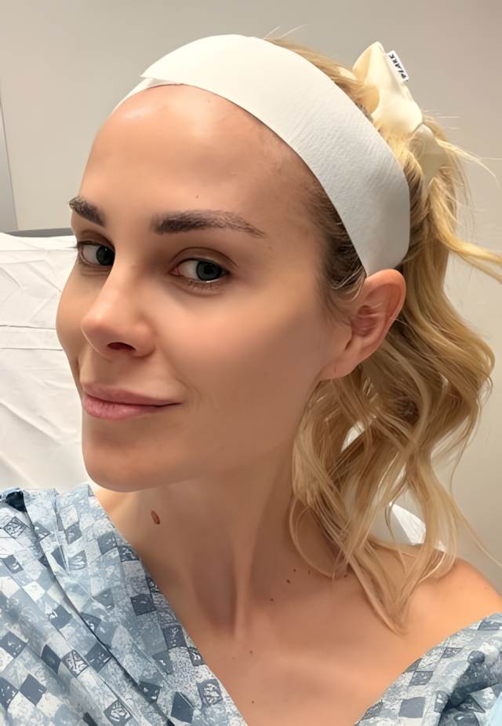
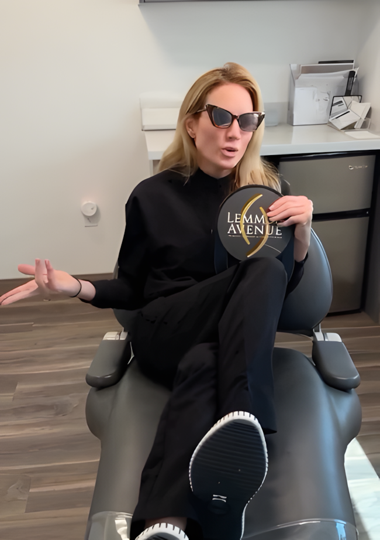
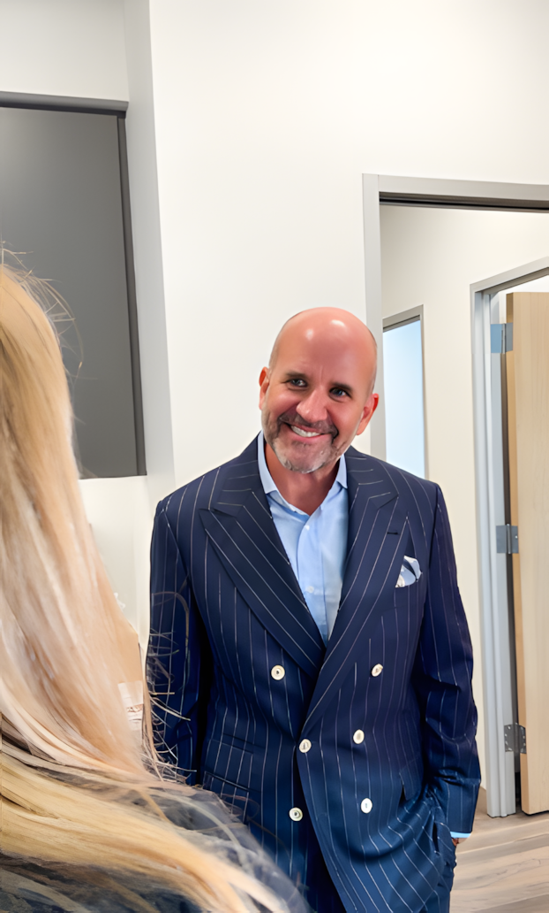
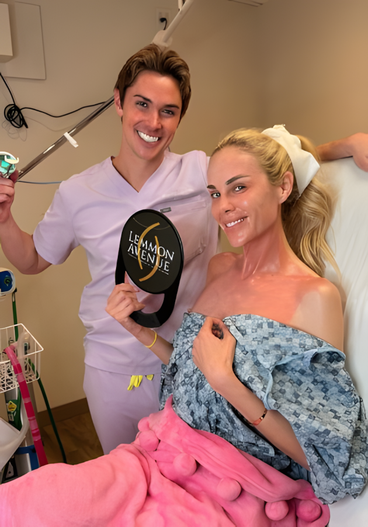
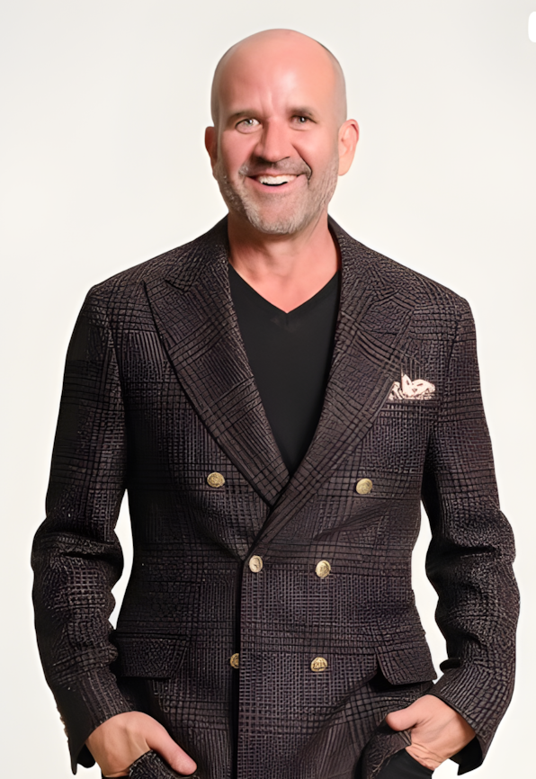

Lemmon Avenue Plastic Surgery & Laser Center combines plastic-surgery-level expertise with full-service aesthetic convenience — so you get a personalized plan, trained specialists, and results that look exactly like you, only better.
"Most people who walk through our doors say the same three words: 'I don't know.' They don't know which treatment is right. They don't know who to trust. They don't know if what they're seeing in the mirror can be fixed — or if it can, whether they'll come out looking like themselves."
Led by Board-Certified Plastic Surgeon Dr. Mark Deuber
Two Dallas-Area Locations · Hundreds of 5-Star Reviews

Maybe it's the photographs. The ones from last year's holiday party compared to this one. Maybe it's the lighting during video calls. Maybe it's just something you've felt for a while — a quiet disconnect between how vibrant you feel on the inside and what you're starting to see reflected back at you.
Whatever brought you here, you've probably already spent time researching. You've scrolled through before-and-afters. You've Googled "best injector Dallas." You've read about Botox versus filler versus laser versus things you'd never heard of a year ago.
And if you're honest? You're more confused than when you started.
Because here's what the research doesn't tell you:
Not all aesthetic providers are the same. Not even close.
You've probably seen it. The woman at school pickup who looks perpetually surprised. The executive whose lips no longer look quite right. These aren't vanity disasters — they're the predictable result of treatment decisions made without the right expertise, oversight, or commitment to what actually looks best on you specifically.
But here's the thing about waiting: the collagen you're losing right now won't come back on its own. The sun damage accumulating compounds. Preventative aesthetics is not vanity. It's a strategy. And the best time to start building a relationship with the right practice is before the changes require more aggressive intervention.
"This is exactly the problem Lemmon Avenue was designed to solve. Not just another med spa. Not a practice where you leave with a plan built for the next patient, not for you."

Here's what you deserve to understand before you book anywhere.
At a Standard Med Spa
At Lemmon Avenue
Because the right answer isn't always one treatment — it's the right combination, in the right sequence, delivered by the right specialists.
Botox, Dysport, and neurotoxin treatments for expression lines and preventative care. Dermal fillers for volume restoration, lip enhancement, jawline definition, and full facial balancing — by injectors who prioritize proportion, symmetry, and natural results.
For: Fine lines · Volume loss · Lip fullness · Facial balance
BBL BroadBand Light, Halo Laser Resurfacing, ProFractional Laser, and more — industry-leading technologies for skin texture, pigmentation, sun damage, and collagen stimulation. Results that turn back the clock without surgery.
For: Sun damage · Uneven tone · Texture · Pores · Acne scarring
RF Microneedling, HydraFacial, medical-grade chemical peels, and skin resurfacing treatments that restore luminosity, tighten skin, and address concerns from the inside out.
For: Dull skin · Texture · Early laxity · Glow & maintenance
Non-surgical body treatments designed to sculpt, tighten, and refine without downtime. Ideal for patients who want to address stubborn areas without surgery.
For: Body sculpting · Skin tightening · Stubborn area reduction
Confidential, medically supervised treatments for intimate wellness, vaginal rejuvenation, and urinary incontinence — a category often underserved in aesthetics and deeply impactful for quality of life.
For: Intimate wellness · Postpartum care · Confidence & function
Curated professional skincare products, personalized regimens, and retail options designed to maintain and amplify your treatment results at home.
For: Daily maintenance · Treatment support · Skin health optimization
When non-surgical options have taken you as far as they can — or when you're ready to explore surgical solutions — Lemmon Avenue's plastic surgery expertise is available within the same trusted practice relationship.
For: Breast procedures · Facial surgery · Body contouring surgery
Not sure which of these is right for you? That's exactly what our free Aesthetic Intelligence Assessment is designed to solve. Answer a few simple questions about your concerns and goals, and we'll show you a personalized treatment path — before you ever need to book a consultation.
→ Take the Free Assessment (3 Min)We've designed this process specifically to remove the overwhelm, eliminate the guesswork, and make sure every decision feels clear, confident, and completely right for you.

Start with our free Aesthetic Intelligence Assessment — a quick, personalized tool developed to help you understand which treatments are most likely to address your specific concerns and goals. No commitment, no pressure. Just clarity.

Your consultation at Lemmon Avenue is nothing like a typical med spa. We take time. We listen to your history, concerns, goals, and reservations. We look at your face, skin, or body as a whole — not just the one thing you came in about. Then we build your personalized plan.
With a clear roadmap in hand, you begin your aesthetic journey with complete confidence. Your treatments are administered by trained specialists using advanced medical-grade technology — and because every step was designed for you, your results look natural, balanced, and authentically yours.

Aesthetic results are a conversation, not a one-time event. As your results develop over weeks and months, your Lemmon Avenue team remains your partner — adjusting, optimizing, and helping you maintain the results you love over the long term.
"I cannot believe the results. I came in not knowing what I needed — just knowing I wanted to look more like myself again. The team took their time, explained everything, and what they did was so natural that my husband thought I'd just been sleeping better. That's exactly what I wanted."
"I've been to other places in Dallas and always felt rushed or oversold. Lemmon Avenue was completely different from the first call. The whole team was knowledgeable, professional, and genuinely warm from beginning to end. I've never felt more confident about a decision for my appearance."
"I was extremely nervous — I'd seen too many 'overdone' results and honestly almost didn't go. I'm so glad I did. I felt extremely confident and comfortable throughout the entire process, and the results are exactly what I asked for: nobody knows, but everyone has said I look amazing."
"The team here is knowledgeable about all skin issues — and I came in with several. They built me a plan that made sense and explained every step. Six months in, my skin looks better than it did ten years ago. I'm not exaggerating."
"Always professional. Always consistent. I've been coming here for two years and every single visit delivers. I refer everyone I know who asks me what I've been doing."
Takes 3 minutes. No commitment required. Personalized results delivered instantly.
Because results are only as good as the expertise, judgment, and artistry of the people delivering them.
At Lemmon Avenue, that starts with Dr. Mark Deuber — a board-certified plastic surgeon whose medical direction sets the standard for everything that happens within our practice. Dr. Deuber's philosophy is not about changing faces. It's about restoring and enhancing them — with a conservative, balanced approach that prioritizes what looks most natural on you specifically.
This is not a team that recommends the most treatments. It's a team that recommends the right treatments.
We built Lemmon Avenue for people who've had enough of the aesthetic industry's extremes: the bargain clinics that cut corners, the social-media-famous injectors who replicate the same look on every face, and the practices where you leave feeling oversold and underheard.
Natural. Balanced. Yours.
That's the Lemmon Avenue standard.
Read through these and notice which ones feel familiar:
You've started noticing changes in photos that you don't notice in the mirror — and the gap between how you feel and how you look has been quietly bothering you for longer than you'd like to admit.
You want help — but you're terrified of looking "done," overdone, or like someone who's clearly had "work" — because you've seen that outcome on others and it's the last thing you want for yourself.
You've Googled treatments, watched the videos, read the reviews — and you're still not entirely sure whether you need Botox, filler, laser, resurfacing, or something else entirely.
You've had a treatment somewhere that didn't deliver what you hoped — the results weren't natural, the experience felt rushed, or you left with a treatment you're not sure you actually needed.
You're ready to invest in yourself — but only with a practice you can genuinely trust — one with real credentials, real expertise, and a genuine commitment to what looks best on you.
If you recognized yourself in two or more of those statements, this is likely exactly the practice you've been looking for.
→ Yes, I'm Ready to Find My Treatment PathWe take our patient relationships seriously. That means we'd rather be honest upfront than have you feel disappointed later.
You're primarily shopping for the lowest price. Our services reflect the expertise, technology, and medical oversight we provide. We are not — and never will be — the cheapest option in Dallas. If cost is your primary decision factor, there are other providers who will compete on that basis.
You want dramatic results fast, regardless of what looks natural. We have an aesthetic philosophy here, and it's rooted in balance, proportion, and what actually looks best on your specific face. If you want aggressive treatment without regard for subtlety, our conservative approach may frustrate you.
You're not ready to invest time in the consultation and planning process. Great aesthetic results don't happen in a 10-minute appointment. We take time to understand you. If you're looking for a quick in-and-out experience, our model may not match your expectations.
You're outside our Dallas-Frisco service area and unable to attend in-person appointments. We offer virtual consultations for initial assessment, but treatment requires in-person visits to our Dallas or Frisco locations.
"If none of those apply — and if the previous section felt like we were reading your mind — then you belong here. And we'd be honored to earn your trust."
Different entry points for different stages — not a sales pitch, but a value ladder.
Free Aesthetic Intelligence Assessment. Take our 3-minute assessment to receive a personalized treatment roadmap based on your concerns, goals, skin type, and timeline. Developed under Dr. Deuber's practice standards. No commitment, no fee.
Take My Free Assessment NowBegin with an introductory treatment designed to show you exactly what's possible: a signature HydraFacial plus a personalized skin consultation with product recommendations and a discussion of your longer-term treatment options.
Book My Glow Starter SessionA carefully sequenced combination of Botox and/or dermal filler treatment, customized to your unique facial anatomy, with a 6-week follow-up to assess results and refine. For patients ready to look genuinely, naturally refreshed.
Book My ConsultationA multi-treatment laser and skin rejuvenation series designed to address texture, pigmentation, collagen loss, and skin quality at every level. Optional surgical consultation available within the same practice relationship.
Request My Glow Protocol ConsultationFinancing AvailableInvestment shouldn't be a barrier to the right care. Lemmon Avenue offers flexible financing options to make your aesthetic plan work for your life. Ask about financing during your consultation.
Learn About FinancingSome treatments take time to deliver full results. Botox settles in 10–14 days. Laser treatments often require a series of sessions spaced weeks apart. Fillers integrate over several weeks. Surgical recovery has its own timeline.
This means the best time to start your aesthetic journey is almost always before you need the results — not in the week before your reunion, wedding, or gala.
Right now, our team is booking consultations for pre-event, seasonal refresh, and long-term aesthetic planning. If you have a milestone or personal timeline in mind, request your consultation now to ensure your treatment plan can deliver the results you want in time.
Limited consultation availability is real — not manufactured. We serve a high volume of patients across two locations. If you're considering Lemmon Avenue, booking sooner is genuinely in your interest.
→ Check Available Consultation TimesOr call/text us directly: Dallas & Frisco locations
We believe informed patients make the best patients.
This is the question we hear most often, and we take it seriously. Our entire aesthetic philosophy is built around natural-looking, balanced enhancement — which means we will never recommend more treatment than your face needs, and we will always discuss what we're doing and why.
Our before-and-after gallery is specifically curated to show the kinds of results we deliver: subtle, refreshed, and natural. If what you see doesn't resonate with your aesthetic goals, we're probably not the right fit — and we'd tell you that.
The most important difference is medical oversight. Lemmon Avenue operates under the medical direction of Dr. Mark Deuber, a board-certified plastic surgeon. This means the standards for training, technique, treatment planning, and patient safety are set at the level of a plastic surgery practice — not a standard spa environment.
Our providers are also trained to understand facial anatomy holistically. They don't just treat the one thing you came in about — they consider how everything relates to everything else, which is how you get balanced, natural results instead of one area that looks "treated" and others that don't.
Honestly? That's our job, not yours. You don't need to arrive knowing the answer — you just need to show up with your concerns and your goals. Our team's role is to translate what you want to see into the right clinical approach.
That said, our free Aesthetic Intelligence Assessment is a great starting point to get oriented before your consultation. It takes about 3 minutes and gives you a personalized starting framework to bring into your appointment.
We don't publish fixed pricing because personalized treatment plans have a range based on what you actually need — and we refuse to oversimplify that with a menu price.
What we will tell you is this: our pricing reflects the expertise, technology, and medical oversight we provide. We'd encourage you to ask what the cost of a poor outcome — correction treatments, repeat visits, or simply living with results you don't love — would be. That math usually makes our investment look much more reasonable. Financing is available, and we're transparent about costs during your consultation — before you commit to anything.
You're in the right place. Many of our patients begin with non-surgical treatments and have surgical curiosity questions along the way. Because Dr. Deuber is a board-certified plastic surgeon and the medical director of our practice, you can have that conversation without going somewhere new.
We'll never push surgery on anyone. But if and when you're ready to explore it, we're already the team you trust.
Your consultation at Lemmon Avenue is a conversation — not a sales pitch. A trained aesthetic specialist will take time to understand your history, concerns, and goals. We'll look at your face, skin, or body in detail, discuss what's possible, and develop a realistic treatment plan with clear expectations about results, timeline, and investment.
You'll leave with a clear roadmap — not a feeling of pressure to decide immediately. Most patients book their first treatment at or shortly after consultation when they feel ready.
Yes. Our virtual consultation tool is available for patients who want to begin the conversation before coming in, or who prefer an initial remote assessment. Virtual consultations are a great way to get a sense of whether Lemmon Avenue is the right fit before scheduling your in-person visit.
We hear this often, and we understand why you'd be cautious. The best thing we can do is be transparent: our approach, our credentials, our before-and-after gallery, and our patient reviews are all available for you to evaluate before you ever book.
The fact that you had a bad experience somewhere else is exactly why board-certified medical oversight and trained, specialized providers matter so much. Come in for a consultation. Ask every question you have. If we're not the right fit, we'll tell you — but we think you'll feel the difference from the first conversation.
You've read this far. Which means some part of you already knows you're ready for this. Our team — under the direction of board-certified plastic surgeon Dr. Mark Deuber — is ready to build a plan specifically for your face, your skin, your goals, and your timeline. No pressure. No overselling. No guesswork.
Just a clear, personalized path toward looking naturally, beautifully, unmistakably like yourself.
Prefer to speak directly?
Dallas: Call or text your local location